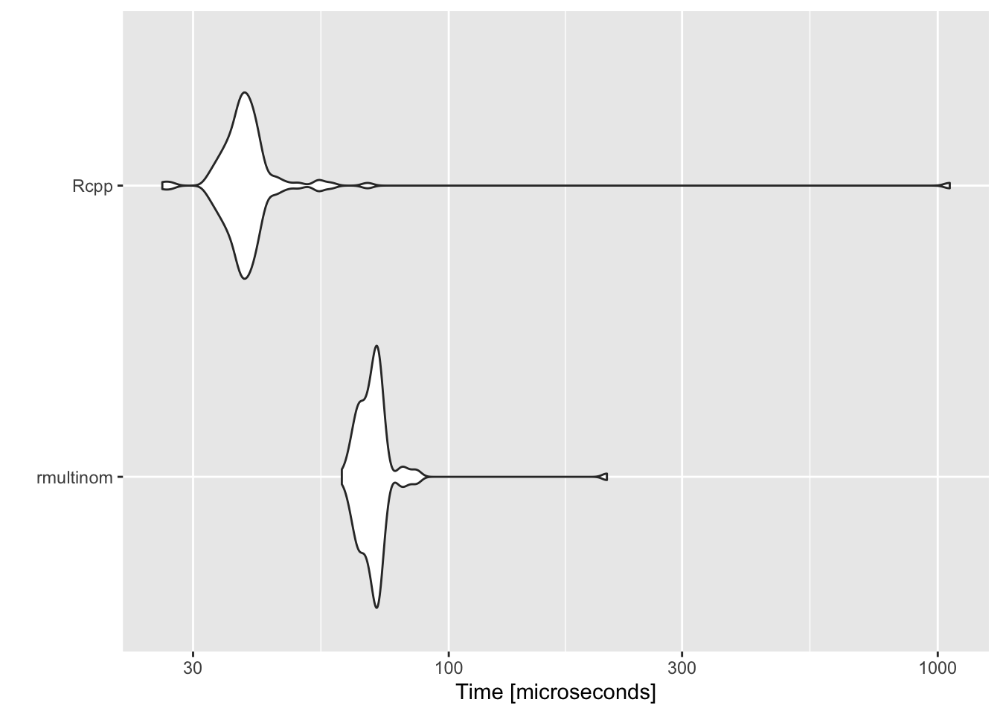

blogdown::new_post("Your new post", ext = ".Rmd")How I’m building this website in R
2021-02-02
Note
Update on Feb 20, 2022
The post below was written when I still used blogdown in combination with Hugo to build this blog. I have recently migrated the blog (along pretty much everything else I do) to quarto.
Quarto® is an open-source scientific and technical publishing system built on Pandoc.
Based on my first few experiences I would go further and say that quarto is the only open-source scientific and technical publishing system you’ll ever need. The project is supported by RStudio and (unsurprisingly) Yihui Xie is one of the contributors. Go check it out!
Getting started
It turns out building a static website in R is remarkably easy, as long as you know your way around R Markdown. Knowledge of HTML and CSS helps, but is not strictly necessary and can be acquired along the way. My package of choice for this website is blogdown by Yihui Xie who has had a major impact on the R community through his many package contributions (knitr, bookdown, pagedown, …) and certainly made my life a lot easier on many occasions.
To get started just follow the instructions on blogdown’s GitHub repository or keep reading here for a high-level overview. Setting up a basic website in R requires exactly two steps:
Set up a local directory for the website. Let’s suppose you create it here
~/Documents/myAwesomeWebsite.In R, navigate to the directory and simply run
blogdown::newsite().
This will set up a basic template which you can develop. Changing the theme and playing with the basic structure of the website is relatively straight-forward. Personally I have so far managed to work things out based on a working knowledge of HTML and CSS that I’ve developed in the past through my work with R Shiny.
Deploying your website
There are various ways to deploy your website, i.e. make it accessible to the public. This website is deployed through GitHub pages. Detailed instructions on how to do this can be found here. Since I already had an existing local clone of my pat-alt.github.io repo, I just dropped it in the source directory of the website:
source/
│
├── config.yaml
├── content/
├── themes/
└── ...
patalt.github.io/
│
├── .git/
├── .nojekyll
├── index.html
├── about/
└── ...After adding publishDir: pat-alt.github.io to my config.yaml and then running blogdown::hugo_build() the website was built inside the clone. All that was left to do was to commit changes from the local clone to the pat-alt.github.io remote repo. A few moments later the website was already up and running.
Why all the trouble?
There are certainly easier ways to build a website. But if like me you do pretty much all your work in R Markdown and want to share some of it, then you will love blogdown. The beauty of it is that once the basic infrastructure is set up, adding content is as simple as running the following wrapper function
where the first argument is just the title of your post and the ext argument can be used to specify that you want to create an R Markdown document that can include code chucks. The wrapper function will automatically set up a directory for your post under /post/. R Studio will redirect you to the relevant .Rmd file that you can then fill with content. By default that folder will look roughly like this:
├── index.Rmd
├── index.html
└── index_files
└── header-attrs
└── header-attrs.jsA simple coding example
As you can probably tell from the code chunks above this post was created just in the way I described. So I thought I might as well go ahead with a simple coding example to add some flavour. Suppose you have built some function that you think is worth sharing with the world or simply learned something new and interesting. As a case in point, I recently had a look at the Rcpp package and wrote a small program in C++ to be used in R. Since R Markdown supports Rcpp code chunks (along with Python, bash, SQL, …) it is straight-forward to show-case that code on this website.
The program can be used to simulate data from a categorical distribution. This distribution describes the possible results of a random variable that can take on one of \(K\) possible categories with different probabilities. In base R we could use rmultinom(n=1000,1,p=c(0.5,0.1,0.4)) to simulate draws from one such distribution with three different categories. Alternatively, we could write the program in C++ as follows:
#include <Rcpp.h>
using namespace Rcpp;
// [[Rcpp::export]]
NumericMatrix simCategorical(int n, NumericVector p) {
int k = p.size();
NumericMatrix mat(k, n);
// Normalise prob if necessary:
if (sum(p)!=1) {
p = p/sum(p);
}
NumericVector emp_cdf = cumsum(p);
NumericVector u = Rcpp::runif(n, 0, 1);
// Matrix for 1-hot-encoding:
for (int j = 0; j < n; j++) {
// Perform binary search:
int l = 0;
int r = k;
double target = u[j];
while (l < r) {
int m = floor((l+r)/2);
if (emp_cdf[m] > target) {
r = m;
} else {
l = m+1;
}
}
mat(r,j) = 1;
}
return mat;
}In terms of performance it turns out that the simple C++ program actually does somewhat better than the base R alternative:
library(microbenchmark)
library(ggplot2)
n <- 1000
p <- c(0.5,0.1,0.4)
mb <- microbenchmark(
"rmultinom" = {rmultinom(n, 1, p)},
"Rcpp" = {simCategorical(n, p)}
)
autoplot(mb)
Embedding existing work
If you have some existing work that you would like to share you can just use it to overwrite the index.Rmd file. blogdown supports any kind of R Markdown documents so you can use all of your favourite markdown packages (bookdown, pagedown, …). Just make sure to specify HTML output in the YAML header.
Resources
For more information about blogdown see here. To inspect the code that builds this website check out my GitHub repository.